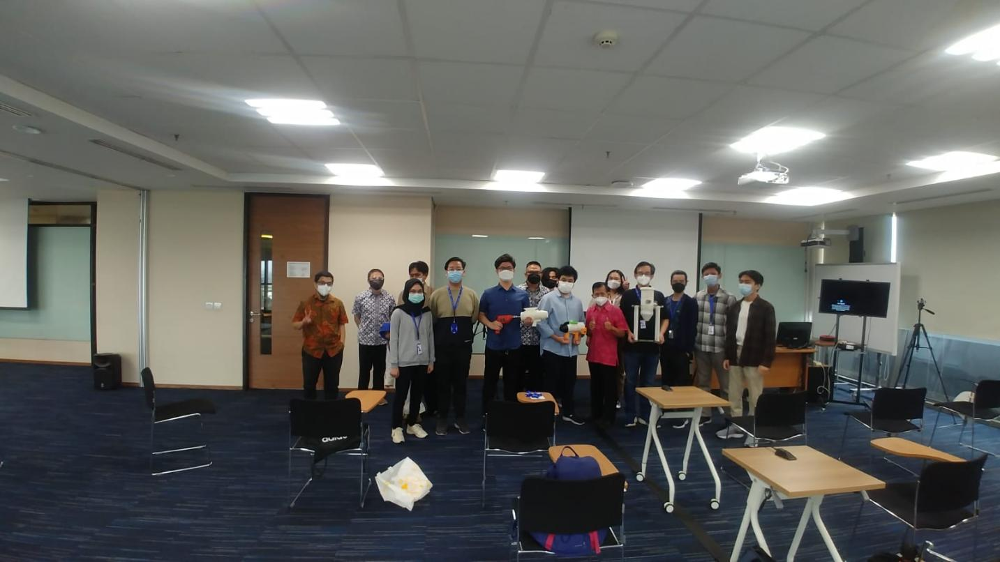

COMMUNITY SERVICES
Professional Services for Industries
- Co-Investigator, Development of Autonomous Towing Vehicle: PT Hanaang Global Technology (August 2022 - 31 January 2023)
- Team Leader, Review of Making Guidelines for the Refurbishment Inspection Results in Overhead Catenary: PT Kereta Api Indonesia (July 2022 - November 2022)
- Co-Investigator, Fabrication of 3 sets Air Shoe, Customer: Sealed Air Re-imagine Sdn Bhd (November 2017 - January 2018).
- Co-Investigator, Fabrication of 8 sets Water Ring, Customer: Sealed Air Re-imagine Sdn Bhd (February 2018 - September 2018).
Community Services Activities
- Facilitator in Implementation of 5S for the Small Business Workshop and Machine Shop, January - December 2024.
- Facilitator in Development of Machine for Pound Printing Leaf in Cloth and Mould for Ondel-Ondel Souvenir Model for UMKM Lentera Agung, Jakarta Selatan, January - December 2023.
- Facilitator in Development of Machine to Produce Akar Kelapa Snack and Essential Oil for Perumkmindo Jakarta Selatan, August 2020 - June 2022.
- Moderator in Webinar Event SMP Negeri 174 Jakarta with topic “Introduction to Industrial Revolution 4.0 and It's Role in Education Sector”, 12 January 2022.
- Facilitator in Utilization of Organic Waste for Biogas and Biodigester Installation, Pondok Tahfidz master Alfaruq Kalimulya, Depok, September - December 2020.
- Invited Speaker in the event: Monday Morning Ceremonial in SMA Alfa Centauri, November 2020.
- Engage Lab Presenter at Disrupted Event in Sampoerna University, January 2020.
- Seminar: Pursuing Higher Education and How to Get a Scholarship, and Robotic Exhibition at Caringin Bogor, November 2019.
- Nurturing Indonesia's Youth in the Importance of Higher Degree Academic and Research in Local and Overseas at Jame Pekojan High School, August 2019.
